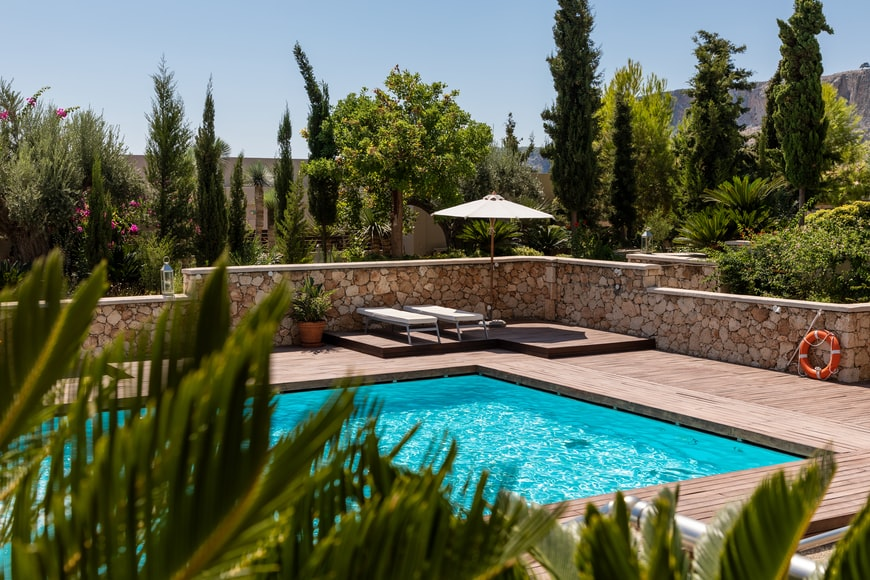

Welcome to SparklePools!
Our Purpose
Have you ever tried taking care of your pool chemicals all by yourself, and it just turns out to be a big chore? Well, our website is the destination for you! Here at sparklepools.com we can review and analyze your pool and the chemical levels for a very low price. At sparklepools we all have experience working hands on with the greenest and nastiest of pools. We have pools of our own, and with our expertise your pool will be ready for the summer every single year with just a couple clicks away!
